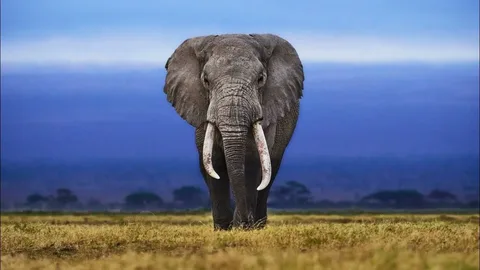
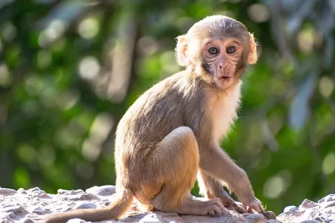
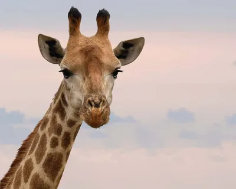

Animals
Lion
The lion (Panthera leo) is a large cat of the genus Panthera, currently ranging only in Sub-Saharan Africa and India. It has a muscular, broad-chested body; a short, rounded head; round ears; and a dark, hairy tuft at the tip of its tail. It is sexually dimorphic; adult male lions are larger than females and have a more prominent mane that usually obscures the ears and extends to the shoulders.
.webp)
Elephant
Elephants are large mammals of the family Elephantidae and the order Proboscidea. Three species are currently recognized: the African bush elephant, the African forest elephant, and the Asian elephant. Elephants are the largest existing land animals. They are known for their intelligence, complex social structures, and strong familial bonds.
Monkey
Monkeys are haplorhine primates, a group that also includes apes and humans. They are generally considered to be intelligent animals, capable of using tools, learning new skills, and exhibiting complex social behaviors. Monkeys are found in various habitats, including tropical rainforests, savannas, and mountainous regions.
Girraffe
The giraffe (Giraffa camelopardalis) is an African artiodactyl mammal, the tallest living terrestrial animal and the largest ruminant. It is traditionally considered to be one species, G. camelopardalis, with nine subspecies. However, recent studies suggest that there may be up to four distinct species. Giraffes are known for their long necks, which allow them to reach leaves high in trees that other herbivores cannot access.
Tiger
The tiger (Panthera tigris) is the largest species among the Felidae and classified in the genus Panthera. It is most recognisable for its dark vertical stripes on orange-brown fur with a lighter underside. It is an apex predator, primarily preying on ungulates such as deer and wild boar. It is territorial and generally a solitary but social predator, requiring large contiguous areas of habitat that support its prey requirements.
.webp)